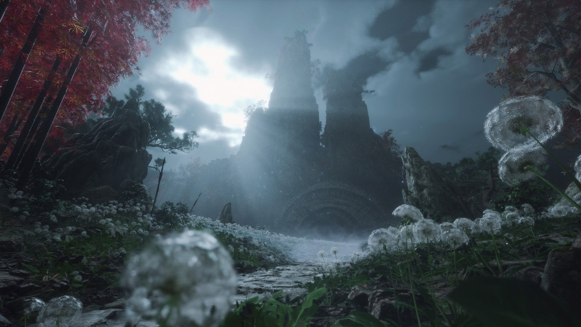
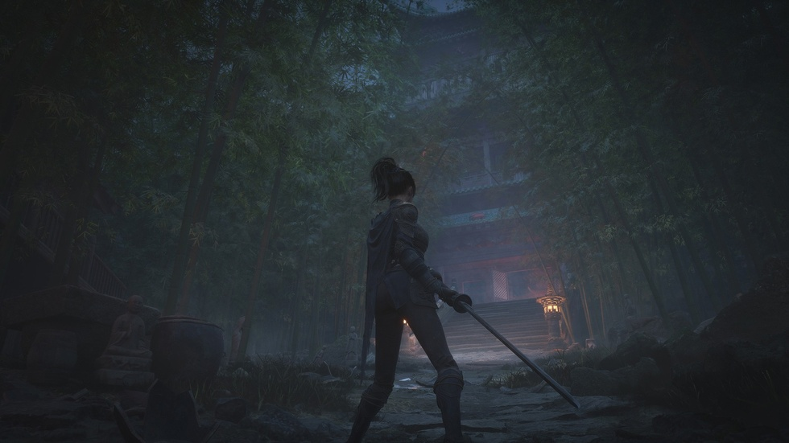
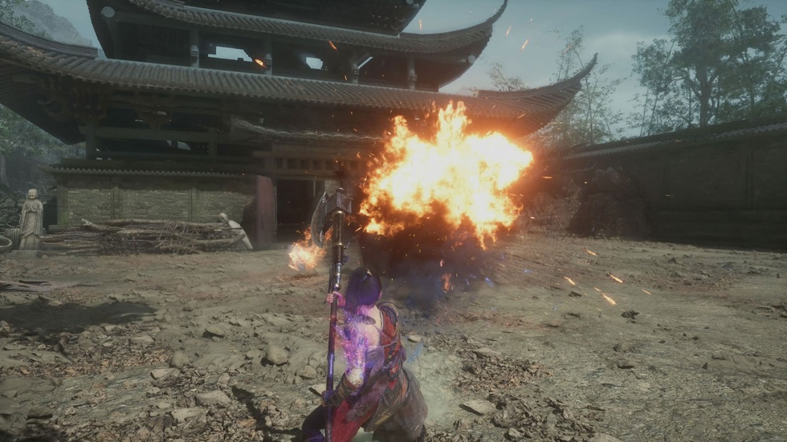
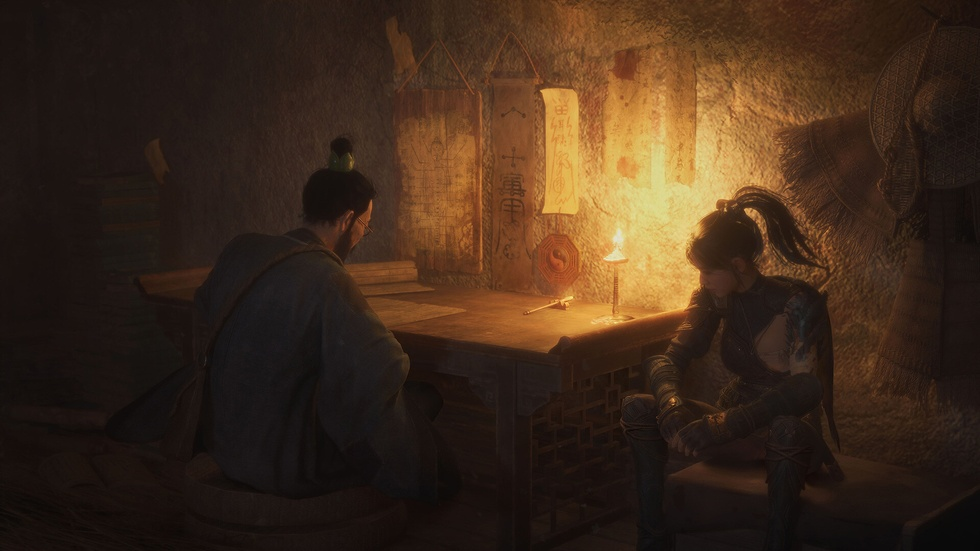

国产单机制作人最真实的至暗时刻与重生法则
夏思源把手机放到桌上时，我注意到一个动作：他说"接到那通电话"的时候，右手食指敲了两下桌面。
很轻。他自己没察觉。

2025年下半年他"消失"了。准确说是7月到12月，整整180天。那个刚用《明末：渊虚之羽》在国产单机市场砸出水花的制作人，像被从游戏圈的信息流里连根拔掉了。
不对。他就是被拔掉的。
被自己创立的IP扫地出门。这说法听起来像狗血剧，但在国产单机圈子里，发生的频次比大多数人想象的高。只不过大多数制作人选择沉默，等下一款产品出来时轻描淡写带一句"换了个团队"。夏思源是第一个愿意坐下来，把那180天里每个溃败细节摊在桌上让我看的人。
他说那是"幸运"。
我没接话。等他解释。
剥离

失去IP控制权这事，《明末》上线前就有征兆了。但夏思源当时没往那个方向想——团队赶进度，外部催交付，玩家社区的期待值拉满，他没精力去想"如果有一天我不在这个位置上了会怎样"。
然后那天就来了。
不是开会通知的，不是邮件确认的。一个很日常的节点，他突然发现自己对后续内容的规划权限被收回了。他描述那个瞬间时停顿了很长时间，然后说："就像一个你养了四五年的东西，突然告诉你，它不再是你来决定它长什么样了。"

《明末》当时销量数据不差。505 Games的Thomas Rosenthal后来承认："从商业角度来看，这是一个非常成功的IP。"但商业成功和制作人话语权从来不是正相关。这个行业里，产品卖爆了制作人反而被架空的案例多的是，只是没人在媒体上把那过程写出来。
夏思源被剥离之后，没有撕扯，没有公开表态，没有行业熟悉的那套"发长文诉衷肠"流程。
他直接安静了。
180天
7月到12月，他对外说是"处理个人事务"和"寻找方向和出路"。但真正让他失语的，不是没有方向，是方向突然变得太多了。

之前五六年他只有一个目标：把《明末》做完，把无常这个角色立住。所有决策都围绕这一个主干生长，他不需要选择，只需要执行和优化。主干被抽走之后，面对的不是空白，是无数个岔路口——继续做同类游戏？换个赛道？彻底离开行业？去大厂挂个名拿高薪？干脆不干了？
他跟我说那段时间他"和自己下棋"。
这句话我琢磨了很久。一个习惯对几百人团队负责、对千万级玩家预期负责的人，突然只剩下和自己对弈。没有观众，没有棋盘记录，每一步走完不需要向任何人交代。但恰恰是这种"不需要交代"让他陷入更深的困局——他发现自己过去五六年做的每一个决策，本质上都是在"被需要"的框架里完成的。当"被需要"这个外部约束撤掉之后，他几乎不认识自己的决策逻辑了。
2025年12月的一天，电话来了。
505 Games那边：投资超1.6亿元，新工作室可以继续做无常系列，IP使用权拿回来了，新项目《明末：渊虚之羽》续作启动。
我问他记不记得电话里具体说了什么。他想了想："具体词记不清了，但那个感觉我记住了——不是狂喜，是你本来以为你在黑暗里走一条死路，突然有人把灯打开说，你走的方向是对的。"
"幸运"
坦率说，夏思源反复用"幸运"形容这段经历的时候，我的第一反应是：公关话术。
从任何一个外部视角看，这都不是幸运。是被剥夺之后重新发还，是把你从自己建的房子里赶出去再让你以访客身份买票回来。跟幸运有什么关系？
后来我换了个角度。
假如那通电话没来呢？假如505 Games没有选择继续合作呢？假如那180天里他选了一个错误的方向把自己彻底消耗掉了呢？
国产单机这个赛道，过去五年我见过太多"被消失"的制作人。有的因为产品口碑崩盘，有的因为资方换血，有的因为内部权力斗争出局。共同点是：他们消失之后，行业甚至不会追问他们去了哪里。下一款产品出来，下一批制作人上位，玩家的注意力永远在前方，没有人会为上一个"没跟上车"的人停留超过两周。
夏思源是极少数被"还回来"的那个。
所以他说"幸运"的时候，可能真的是在说：我经历了这个行业90%的制作人都会经历或已经经历的剥夺，但我是那个被第二次选择的人。他清楚这套机制的运转方式，清楚到连愤怒的力气都省了，直接跳到"那我接下来怎么把这件事做好"。
玩家视角看这事更直接。
《明末》玩家社区在夏思源"消失"的那段时间有一轮讨论，焦点不是"谁对谁错"，而是"无常这个角色还会不会延续"。玩家对一个IP的忠诚度往往是跟着角色走的，不是跟着公司，也不是跟着制作人。但当制作人就是那个"让角色活起来"的人时，玩家会产生一种近乎直觉的信任绑定。
夏思源说了一句话："无常是整个系列的核心角色，我们希望在新篇章中这个角色能够像我们的团队一样跟着玩家一起成长。"
潜台词是：他回来了，无常才会"成长"。换一个制作人，无常可能还在，但"成长"的轨迹会断掉。
玩家不一定知道制作人是谁，但他们能感知到角色身上那种连贯的生命力。这大概是夏思源在整个事件里最核心的筹码——不是谈判能力，不是商业嗅觉，是他手里握着无常这个角色的呼吸节奏。
递归海豚
新工作室的名字我追问了很久。
"递归"是一个程序概念——在推进的过程中不断产生新的想法和内容，每一步的输出成为下一步的输入。他说这个的时候我意识到，这其实是他对自己那180天的解释：他不是在"找回来"，他是在重新编写自己的底层逻辑，然后带着新逻辑重新进入系统。
"海豚"呢？
他说："更多代表我们做游戏的初心。"
在这个行业里，"初心"已经被用得足够廉价了。但一个刚从自己创立的IP里被剥离出来又拿回去的人说出这个词的时候，我愿意信一次。
因为他完全可以不做这个选择。1.6亿的投资，换了任何人都有更轻松的路——挂个总制作人的虚衔，把具体工作丢给下面的人，自己对外站台讲讲故事就够了。但他选的是最笨的那条路：从零开始搭工作室，自己同时扛"工作室负责人"和"游戏总监"两个角色。前者管钱管人管流程，后者管设计管品质管玩家体验。
这两个角色在他身上形成的张力，恰恰是那180天"和自己下棋"的延续。
韧性
行业里很多人喜欢把"韧性"说成一种美德，一种主动选择的坚强。
但跟夏思源聊完我重新想了一下：他的韧性可能更接近于"没地方可去"之后的一种冷静。
一个做了五六年单机的制作人，半路被剥离IP，你让他去做什么？去大厂做手游？他不一定适应那套DAU逻辑。去做独立游戏？从《明末》的体量缩回来需要一个极其漫长的心理降级。彻底转行？那前面五六年全部清零。
所以他只能等。不是在那个被剥离的缝隙里被动等着，而是用"和自己下棋"的方式把每一个可能的方向都推演一遍。等那通电话来的时候，他不是从零启动，他是从"已经把一百种可能性都推演完了"的状态启动。
这不是幸运。这是那种"你只看到他接到电话那一秒，没看到他前面180天每天跟自己下棋下到凌晨"的幸运。
国产单机野蛮生长的时代，销量数字、投资规模、平台分成这些硬指标永远会被优先讨论。但在机制里被碾过又站起来的人，他们的心理路径才是这个行业真正值得被记录的东西。
夏思源那180天经历了什么，他已经用接下来要做的事回答了。
没说的，全在"递归海豚"四个字里。
关于我们
📱 公众号名称：三天游戏
✍️ 作者：曾三天
扫码关注公众号，获取每日最新资讯

商务合作与版权
商务合作 / 内容投稿 / 品牌推广
请关注公众号「三天游戏」后台留言联系
版权声明：本文由作者整理，转载需注明出处。